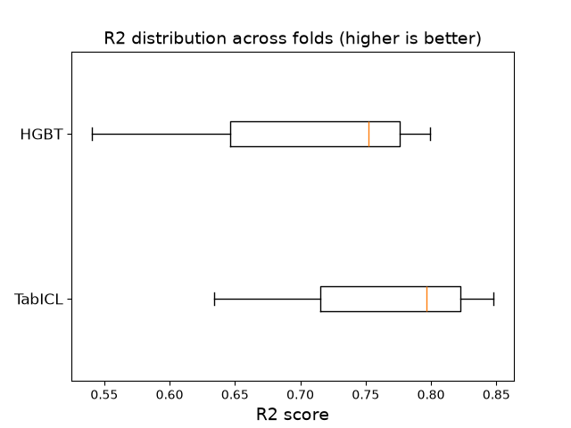

Note
Go to the end to download the full example code or to run this example in your browser via JupyterLite or Binder.
Skrub as preprocessing for Table Foundation Models#
TabICL is an open source tabular foundation model: its a powerful predictor that doesn’t need hyper-parameter tuning. In this example, skrub takes care of preparing the dataframe, and TabICL makes the predictions.
Note
This example requires tabicl, which is not installed with skrub.
You can install it with pip install tabicl.
The TabICL documentation also has a tutorial on how to handle string columns with skrub: TabICL string handling tutorial.
Loading the data#
We use the employee salaries dataset: the goal is to predict the salary of an employee from information such as their department, position title and hiring date. We only keep the first 500 rows to keep the memory pressure and runtime of the example low.
import skrub
from skrub.datasets import fetch_employee_salaries
data = fetch_employee_salaries()
X, y = data.X.iloc[:500], data.y.iloc[:500]
skrub.TableReport(X)
| gender | department | department_name | division | assignment_category | employee_position_title | date_first_hired | year_first_hired | |
|---|---|---|---|---|---|---|---|---|
| 0 | F | POL | Department of Police | MSB Information Mgmt and Tech Division Records Management Section | Fulltime-Regular | Office Services Coordinator | 09/22/1986 | 1,986 |
| 1 | M | POL | Department of Police | ISB Major Crimes Division Fugitive Section | Fulltime-Regular | Master Police Officer | 09/12/1988 | 1,988 |
| 2 | F | HHS | Department of Health and Human Services | Adult Protective and Case Management Services | Fulltime-Regular | Social Worker IV | 11/19/1989 | 1,989 |
| 3 | M | COR | Correction and Rehabilitation | PRRS Facility and Security | Fulltime-Regular | Resident Supervisor II | 05/05/2014 | 2,014 |
| 4 | M | HCA | Department of Housing and Community Affairs | Affordable Housing Programs | Fulltime-Regular | Planning Specialist III | 03/05/2007 | 2,007 |
| 495 | F | DTS | Department of Technology Services | Cable Franchise Administration (CTV) | Fulltime-Regular | Program Manager II | 04/21/2003 | 2,003 |
| 496 | F | HHS | Department of Health and Human Services | Child Welfare Services | Fulltime-Regular | Social Worker II | 04/16/2012 | 2,012 |
| 497 | M | DLC | Department of Liquor Control | Liquor and Wine Delivery Operations | Fulltime-Regular | Supply Technician II | 05/12/2006 | 2,006 |
| 498 | F | HHS | Department of Health and Human Services | School Health Services | Parttime-Regular | School Health Room Technician I | 08/09/1999 | 1,999 |
| 499 | M | FRS | Fire and Rescue Services | Station 16 | Fulltime-Regular | Firefighter/Rescuer III | 06/07/2004 | 2,004 |
gender
StringDtype- Null values
- 1 (0.2%)
- Unique values
- 2 (0.4%)
Most frequent values
department
StringDtype- Null values
- 0 (0.0%)
- Unique values
- 29 (5.8%)
Most frequent values
department_name
StringDtype- Null values
- 0 (0.0%)
- Unique values
- 29 (5.8%)
Most frequent values
division
StringDtype- Null values
- 0 (0.0%)
- Unique values
-
238 (47.6%)
This column has a high cardinality (> 40).
Most frequent values
assignment_category
StringDtype- Null values
- 0 (0.0%)
- Unique values
- 2 (0.4%)
Most frequent values
employee_position_title
StringDtype- Null values
- 0 (0.0%)
- Unique values
-
154 (30.8%)
This column has a high cardinality (> 40).
Most frequent values
date_first_hired
StringDtype- Null values
- 0 (0.0%)
- Unique values
-
372 (74.4%)
This column has a high cardinality (> 40).
Most frequent values
year_first_hired
Int64DType- Null values
- 0 (0.0%)
- Unique values
- 35 (7.0%)
- Mean ± Std
- 2.00e+03 ± 8.45
- Median ± IQR
- 2,006 ± 12
- Min | Max
- 1,978 | 2,016
No columns match the selected filter: . You can change the column filter in the dropdown menu above.
| Column | Column name | dtype | Is sorted | Null values | Unique values | Mean | Std | Min | Median | Max |
|---|---|---|---|---|---|---|---|---|---|---|
| 0 | gender | StringDtype | False | 1 (0.2%) | 2 (0.4%) | |||||
| 1 | department | StringDtype | False | 0 (0.0%) | 29 (5.8%) | |||||
| 2 | department_name | StringDtype | False | 0 (0.0%) | 29 (5.8%) | |||||
| 3 | division | StringDtype | False | 0 (0.0%) | 238 (47.6%) | |||||
| 4 | assignment_category | StringDtype | False | 0 (0.0%) | 2 (0.4%) | |||||
| 5 | employee_position_title | StringDtype | False | 0 (0.0%) | 154 (30.8%) | |||||
| 6 | date_first_hired | StringDtype | False | 0 (0.0%) | 372 (74.4%) | |||||
| 7 | year_first_hired | Int64DType | False | 0 (0.0%) | 35 (7.0%) | 2.00e+03 | 8.45 | 1,978 | 2,006 | 2,016 |
No columns match the selected filter: . You can change the column filter in the dropdown menu above.
gender
StringDtype- Null values
- 1 (0.2%)
- Unique values
- 2 (0.4%)
Most frequent values
department
StringDtype- Null values
- 0 (0.0%)
- Unique values
- 29 (5.8%)
Most frequent values
department_name
StringDtype- Null values
- 0 (0.0%)
- Unique values
- 29 (5.8%)
Most frequent values
division
StringDtype- Null values
- 0 (0.0%)
- Unique values
-
238 (47.6%)
This column has a high cardinality (> 40).
Most frequent values
assignment_category
StringDtype- Null values
- 0 (0.0%)
- Unique values
- 2 (0.4%)
Most frequent values
employee_position_title
StringDtype- Null values
- 0 (0.0%)
- Unique values
-
154 (30.8%)
This column has a high cardinality (> 40).
Most frequent values
date_first_hired
StringDtype- Null values
- 0 (0.0%)
- Unique values
-
372 (74.4%)
This column has a high cardinality (> 40).
Most frequent values
year_first_hired
Int64DType- Null values
- 0 (0.0%)
- Unique values
- 35 (7.0%)
- Mean ± Std
- 2.00e+03 ± 8.45
- Median ± IQR
- 2,006 ± 12
- Min | Max
- 1,978 | 2,016
No columns match the selected filter: . You can change the column filter in the dropdown menu above.
| Column 1 | Column 2 | Cramér's V | Pearson's Correlation |
|---|---|---|---|
| department | department_name | 1.00 | |
| assignment_category | employee_position_title | 0.723 | |
| division | employee_position_title | 0.476 | |
| division | assignment_category | 0.470 | |
| department_name | employee_position_title | 0.455 | |
| department | employee_position_title | 0.455 | |
| department | assignment_category | 0.432 | |
| department_name | assignment_category | 0.432 | |
| gender | department | 0.393 | |
| gender | department_name | 0.393 | |
| department | division | 0.387 | |
| department_name | division | 0.387 | |
| gender | division | 0.276 | |
| gender | employee_position_title | 0.266 | |
| gender | assignment_category | 0.239 | |
| employee_position_title | date_first_hired | 0.213 | |
| department | date_first_hired | 0.190 | |
| department_name | date_first_hired | 0.190 | |
| division | date_first_hired | 0.188 | |
| date_first_hired | year_first_hired | 0.183 | |
| employee_position_title | year_first_hired | 0.168 | |
| department | year_first_hired | 0.146 | |
| department_name | year_first_hired | 0.146 | |
| assignment_category | year_first_hired | 0.135 | |
| gender | date_first_hired | 0.125 | |
| division | year_first_hired | 0.122 | |
| gender | year_first_hired | 0.120 | |
| assignment_category | date_first_hired | 0.0956 |
Please enable javascript
The skrub table reports need javascript to display correctly. If you are displaying a report in a Jupyter notebook and you see this message, you may need to re-execute the cell or to trust the notebook (button on the top right or "File > Trust notebook").
Building the pipeline#
tabular_pipeline() recognizes TabICL estimators and configures
the TableVectorizer with the following configuration:
skrub.TableVectorizer(
low_cardinality="passthrough",
high_cardinality=skrub.StringEncoder(),
cardinality_threshold=10,
datetime=skrub.DatetimeEncoder(periodic_encoding="spline"),
)
String columns with at most 10 unique values are passed through as-is, since
TabICL handles them natively, while columns with more unique values are
encoded with a StringEncoder. TabICL handles missing values
and scaling by itself, so no imputer or scaler is added.
from tabicl import TabICLRegressor
# To keep this example fast, we use a single estimator. Results would probably
# be a bit better with the default ``n_estimators=8``, but it is more expensive.
model = skrub.tabular_pipeline(TabICLRegressor(n_estimators=1))
model
Evaluating the model#
We evaluate the pipeline with a 3-fold cross-validation.
from sklearn.model_selection import cross_validate
tabicl_results = cross_validate(model, X, y, cv=3)
scores = tabicl_results["test_score"]
del model
print(f"R2 score: {scores.mean():.3f} ± {scores.std():.3f}")
Checkpoint 'tabicl-regressor-v2-20260212.ckpt' not cached.
Downloading from Hugging Face Hub (jingang/TabICL).
Warning: You are sending unauthenticated requests to the HF Hub. Please set a HF_TOKEN to enable higher rate limits and faster downloads.
R2 score: 0.760 ± 0.091
Comparing with the default pipeline#
Passing "regressor" to tabular_pipeline() gives a pipeline
that ends with a HistGradientBoostingRegressor.
The data preparation is still handled by skrub: switching the model is a
one-line change.
hgb_results = cross_validate(skrub.tabular_pipeline("regressor"), X, y, cv=3)
named_results = [("TabICL", tabicl_results), ("HGBT", hgb_results)]
for name, results in named_results:
scores = results["test_score"]
duration = results["fit_time"].mean() + results["score_time"].mean()
print(
f"{name:<7} R2 score: {scores.mean():.3f} ± {scores.std():.3f}"
f" (fit + predict time: {duration:.1f} s)"
)
TabICL R2 score: 0.760 ± 0.091 (fit + predict time: 4.1 s)
HGBT R2 score: 0.697 ± 0.113 (fit + predict time: 0.4 s)
We use a boxplot to visualize the distribution of R2 scores across folds for each model.
import matplotlib.pyplot as plt
fig, ax = plt.subplots()
names, scores = zip(*[(name, result["test_score"]) for name, result in named_results])
ax.boxplot(scores, orientation="horizontal")
ax.set_yticks(range(1, len(names) + 1), labels=list(names), size=12)
ax.set_xlabel("R2 score", size=14)
ax.set_title("R2 distribution across folds (higher is better)", size=14)
plt.show()

On this small subset, TabICL gives better predictions than the default pipeline, at the cost of a longer computation time. This comparison is only meant to show how easily models can be swapped: results depend a lot on the dataset and its size.
Note that TabICL does not need hyperparameter tuning: it works well with its
default parameters. The data preparation, however, still has parameters that
can matter, such as the number of components of the
StringEncoder. These can be tuned like in any scikit-learn
pipeline, for example with GridSearchCV.
Conclusion#
skrub prepares the dataframe for TabICL in a single line with
tabular_pipeline(), which also makes it easy to compare TabICL
with other models.
Total running time of the script: (0 minutes 20.118 seconds)
Estimated memory usage: 1315 MB